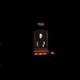
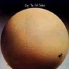

strange music page
canterbury music * * * egg,hatfield and the north,national health
- EGG
- Hatfield and The North
- National Health
- Phil Miller (In Cahoots)
|
#カンタベリーの王道コースです。とりあえずこの辺がいわゆるカンタベリーミュージックってやつみたいです。(Eggちょっと違うかも)というかDave Stewartの足跡みたいな感じですけど。
とりあえず、National Healthの1枚目とか、Hatfieldの2枚とかはすげー面白いです。
|
#Hatfield and the North,BrufordのキーボードのDave Stewartの在籍したEggの1枚目です。
その後のDave Stewartの演奏と比べるとサイケ/プログレの影響が強くて、時代を感じさせます。
カンタベリーと思って聴くよりも、70年代プログレの一つとして聴いたほうが良いのかな？個人的にはナイスよりは好きかも、オルガンロックとしてかっちょいいです。

- Bulb
- While Growing My Hair
- I will Be Absorbed
- Fugue in D Minor
- They Laughed when I Sat Down at The Piano...
- The Song of McGillicudie the Pusillanimous
(or Don't Worry James, Your Socks Are Hanging in The Coal Cellar with Thomas)
- Boilk
- Symphony No.2
Movement 1
Movement 2
Blane
Movement 4
- Dave Stewart (organ,piano,tone generator)
- Mont Campbell (bass,vocals)
- Clive Brooks (drums)
POLYDOR: POCD-1843 (original release 1970 - DERAM RECEORDS)
#Dave StewartってHatfield - National Health - Brufordと行くにつれてだんだんJazzっぽくなってしまうように思っています。
でもこの頃はけっこーロックっぽいです、オルガンを攻撃的にバリバリ弾いてます。格好良いです本当に、あまりカンタベリーって感じしないですけど。個人的にはELPの3割増くらいで好き。
- A Visit To Newport Hospital
- Contrasong
- Boilk
- Long Piece No.3 Part 1
- Part 2
- Part 3
- Part 4
- Dave Stewart (keyboards,organs,piano)
- Mont Campbell (bass,vocals)
- Clive Brooks (drums,percussions)
- Henry Lowther (trumpet on 2.)
- Mike Davis (trumpet on 2.)
- Bob Downes (tenor sax on 2.)
- Tony Roberts (tenor sax on 2.)
POLYDOR: POCD-1844 (original release 1970 - DERAM RECEORDS)
#1974年に一時的に再編した時の3枚目のアルバムです。なんか異常にdrumsの音が大きいのは笑いました。
前作よりもより複雑な曲になっていて「Wind Quartet」とかはほとんど室内楽みたい。Dave Stewartのオルガンロックとしてはこのアルバムが最後かな。
Henry CowのLindsay CooperとTim HodgekinsonやURIEL(Archezal)時代に一緒にやっていたSteve Hillageなんかも参加してます。

- Germ Patrol
- Wind Quartet 1
- Eneagram
- Prelude
- Wring Out The Ground Loosely Now
- Nearch
- Wind Quartet 2
- Dave Stewart (organ,piano)(bass on 6.)
- Clive Brooks (drums)
- Mont Campbell (bass,voice,french horn,piano)
- Amanda Persons (chorus on 4.)
- Ann Rosenthal (chorus on 4.)
- Barbara Gaskin (chorus on 4.)
- Tim Hodgkinson (clarinet on 1.6.)
- Lindsay Cooper (oboe,bassoon on 1.6.)
- Steve Hillage (guitars on 5.)
(1974)
#これを聴かずしてカンタベリーミュージックは語れない...みたいなバンド。JazzyでPopで変拍子でウネウネしてて、いわゆるカンタベリーの代表作です。2枚目のほうが完成度は高いと思いますが、ゴチャゴチャした雰囲気も結構良いです。
メンバーはcaravan/matching mole/eggなどなど純粋にカンタベリーらしいカンタベリーな人々。

- The Stubbs Effects
- Big Jobs (Poo Poo Extract)
- Going Up To People and Tinkling
- Calyx
- Son of "There's No Place Like Hometron"
- Aigrette
- Rifferama
- Fol De Rol
- Shaving is Boring
- Licks for The Ladies
- Bossa Nochance
- Big Jobs No.2 (by Poo and The Wee Wees)
- Lobster in Cleavage Probe
- Gigantic Land Crabs in Earth Takeover Bid
- The Other Stubbs Effect
- Let's Eat (Real Soon)
- Fitter Stoke Has A Bath
- Richard Sinclair (bass,vocals)
- Dave Stewart (piano,organ,tone generator)
- Phil Miler (guitars)
- Pip Pyle (drums)
- Geoff Leigh (sax,flute)
- Jeremy Baines (pixiephone)
- Robert Wyatt (vocals on 4.)
#Hatfield and The Northの2枚目。カンタベリーミュージックの代表作みたいです。前作の未整理な部分もよく整理/消化されて、とてもこなれた内容になっています。
(個人的には前作のちょっとゴチャゴチャした雰囲気も好きなのですが)
人にカンタベリーを薦めるときにはこれが一番解りやすいと思います。
- Share It
- Lounging There Trying
- (Big) John Wayne Socks Psychology on the Jaw
- Chaos at the Greasy Spoon
- The Yes No Interlude
- Fitter Stoke has a Bath
- Didn't Matter Anyway
- Underdub
- Mumps
- Your Majesty is Like a Cream Donut (quiet)
- Lumps
- Prenut
- Your Majesty is Like a Cream Donut (loud)
- (Big) John Wayne Socks Psychology on the Jaw
- Chaos at the Greasy Spoon
- Halfway Between Heaven and Earth
- Oh, Len's Nature !
- Lyng and Gracing
- Richard Sinclair (bass,vocals)
- Dave Stewart (piano,organ,tone generator)
- Phil Miler (guitars)
- Pip Pyle (drums)
- Jimmy Hastings (flute,sopran sax,tenor sax)
- Amanda Persons (chorus)
- Ann Rosenthal (chorus)
- Barbara Gaskin (chorus)
- Tim Hodgkinson (clarinet)
- Lindsay Cooper (oboe,bassoon)
- Mont Campbell (french horn)
#1990年に一回だけ再編したハットフィールドのライヴ盤、キーボードはD.StewartじゃなくてSophia Domancichって女の人です。
結構ハットフィールド以外の曲も多くて Going for A Songなんかは、Caravan of Dreamsの曲(好き)でした。あとはPip Pyleの曲とか女性キーボードの曲(イマイチだけど)とかも。
やっぱDave Stewartがイイな。(2002.8.8)
- Share It
- Shipwrecked
- Underdub
- Blott
- Going for A Song
- Caulifower Ears
- Halfway Between Heaven and Earth
- 5/4 Intro
- It Didn't Matter Anyway
- Richard Sinclair (bass,vocals)
- Phil Miller (guitars)
- Pip Pyle (drums)
- Sophia Domancich (keyboards)
DEMON RECORDS/CODE90: NINETY6 (1993)
#National HealthはHatfieldとGilgameshが合体したようなバンドです、LiveではB.Brufordも参加してたようです。HatfieldよりはちょっとJazz色が強いようです。この1枚目はbassがNeil Murrayです、何でもやるひとですね。あと国内版(Disk Unionで高くなってるやつ)では何故かSoft HeapとGongのライヴがボーナストラックで入ってます。
- Tenemos Roads
- Brujo
- Borogoves
exerpt from part two
part one
- Elephants
- Phil Miller (guitars)
- Pip Pyle (drums,percussions)
- Dave Stewart (organs,keyboards)
- Neil Murray (bass)
- Alan Gowen (keyboards)
- Amanda Parsons (vocals)
- Jimmy Hastings (flute)
- John Mitchell (percussions)
#2枚目です、bassがN.MurrayからJ.Greavesに代わってます。前作よりも更に色々なアイディアが詰まっていてとても面白いです。Henry CowのG.BornとSlapp HappyのP.Blegvadも参加してます。このアルバムを残してD.Stewartが脱退(
BRUFORDに参加)、バンドはしばらくA.Gowenが復帰して存続してたみたいですが、結局解散してしまいました。んでその後癌で死んだA.Gowenの追悼のため一時的に再編しました。
- The Byden 2-Step (for Amphibians) Part 1
- The Collaps
- Squarer for Maud
- Dreams Wide Awake
- Binoculars
- Phlankton
- The Byden 2-Step (for Amphbians) Part 2
- Phil Miller (guitars)
- Dave Stewart (keyboards)
- John Greaves (bass)
- Pip Pyle (drums)
- Jimmy Hastings (flute,clarinet)
- Keith Thompson (oboe)
- Phil Minton (trumpet)
- Paul Nieman (trombone)
- Rick Piddulph (bass)
- Peter Blegvad (vocals)
- George Born (cello)
- Selwyn Baptiste (percussions)
#1981年にガンで死んでしまったAlan Gowenの追悼の意味もあり、一時的に再編されたNational Healthのアルバム。A.Gowen作曲の9曲ですが、カンタベリーらしい抑制の効いたJazz Rockで1枚目2枚目と遜色無い出来です。
- Portrait f a Shrinking Man
- TNTFX
- Black Hat
- I Feel a Night Coming On
- Arriving Twice
- Shining Water
- Tales of a Damson Knight
- Flanagans People
- Toad of Toad Hall
All compositions Alan Gowen
- Phil Miller (guitars)
- Dave Stewart (keyboards)
- John Greaves (bass)
- Pip Pyle (drums,electric drums)
- Ted Emmett (trumpet)
- Annie Whitehead (trombone)
- Amanda Parsons (backing vocals)
- Barbara Gaskin (backing vocals)
- Jimmy Hastings (flute)
- Elton Dean (saxello)
- Richard Sinclair (vocals)
#P.Miller名義での初アルバムみたいですね。86年のリリースでNational Health時代に比べるとやっぱり洗練されてちょっとフュージョンっぽくなってますけど、やっぱ構成っていうか少しずつ盛り上がって行くテンションが有って良いですね。
- a) Green & Purple Extract
b) Hic Haec Hoc
c) A Simple Man
- Eastern Rigion
- Second Sight
- Hard Shoulder
- Figures of Speech
- Green & Purple
- Phil Miller (guitars)
- Hugh Hopper (bass)
- Elton Dean (saxes)
- Pip Pyle (drums)
- Pete Lemer (keyboards)
- Dave Stewart (keyboards on 4.5.)
- Barbara Gaskin (voice on 4.)
VIRGIN JAPAN: VJCP-25065 (original release 1986)
#hatfield - national healthの流れを受け継ぐ音、フィルミラーのソロアルバムです。確かこれもディスクユニオンで捨て値で売ってたのでそんなに期待してなかったんですけど、内容はとても良いです。
- And thus far
- Final call
- Dada Soul
- Truly yours
- Double Talk
- I remain
- Your route 2
- Foreign Bodies
- Phil Miller (guitars,guitar synth.)
- Dave Stewart (keyboards,programming)
- Elton Dean (alto sax,saxello)
- Pip Pyle (drums)
- John Mitchel (keyboards,programming on 2.)
- Richard Sinclair (bass,vocals on 3.)
- Steve Frankin (keyboards on 1.)
- Fred Baker (bass on 1.)
- Barbara Gaskin (backing vocals on 5.6.)
CD RECK-8